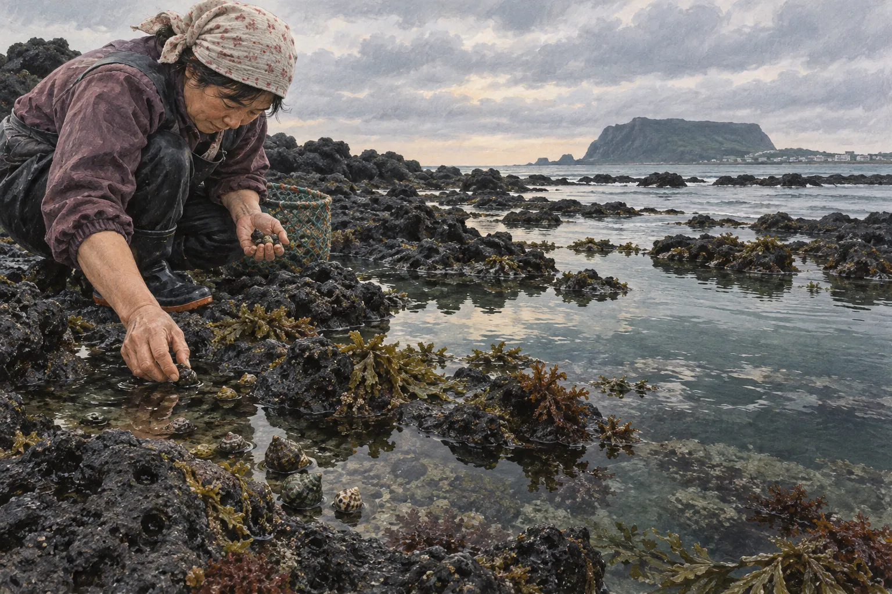

보말죽
쌀을 볶다가 보말살과 삶은 물을 더해 천천히 퍼지게 끓입니다. 작은 살의 탄력과 고소한 바다 향이 부드러운 죽 안에 남습니다.
- 질감
- 부드러움 + 꼬들함
- 기록
- 제주 구술 자료에 남은 생활식

제주 조간대의 보말 채취를 바탕으로 제작한 기록화 · 생성 이미지
넓게 보면 둘 다 고둥류를 가리키지만, 같은 한 종을 뜻하지는 않습니다. ‘보말’은 제주에서 여러 작은 바다 고둥을 부르는 생활어이고, ‘골뱅이’도 시장에서는 여러 식용 복족류를 묶어 부르는 유통명에 가깝습니다.
따라서 “보말=골뱅이”라고 바꾸어 쓰면 제주에서 구분해 온 수두리·먹보말·돌포말 같은 이름과 서식 환경이 사라집니다. 어느 종을 말하는지는 껍데기, 크기, 잡은 곳, 마을의 부름을 함께 확인해야 합니다.
제주학연구센터의 구술 자료에는 보말, 수두리, 먹보말, 돌포말, ᄎᆞᆷᄀᆞ메기 등 다양한 이름이 등장합니다. 같은 말도 마을과 제보자에 따라 가리키는 종이 달라질 수 있습니다.
지금 펼친 이름
제주 해양수산연구원이 ‘팽이고둥’으로 확인한 지역명입니다. 조간대를 포함한 수심 5m 이내의 얕은 바다에 주로 살며, 제주 보말 가운데 비교적 크고 식용 가치가 높은 종류로 소개됩니다.
※ 위 이름은 생물 분류표가 아니라 제주 사람들의 생활 언어를 보여 줍니다. 정확한 종 판별에는 표본과 전문가 확인이 필요합니다.
두 이름 모두 한 생물종만을 뜻하지 않습니다. 아래 표는 제주 현장의 보말과 일상적으로 유통되는 골뱅이를 비교한 일반적인 경향입니다.
제주에서 고둥류를 부르는 지역 생활어
여러 식용 복족류를 아우르는 시장·음식 이름
팽이고둥인 수두리보말, 먹보말 등 여러 연안 고둥
물레고둥류·큰구슬우렁이·각시수랑 등 제품과 산지에 따라 다름
손으로 줍는 비교적 작은 개체가 많음
통조림·무침용은 살이 큰 종류가 흔함
현무암 조간대와 얕은 연안, 바위·해조류 주변
종에 따라 서해·동해, 얕은 바다부터 깊은 바다까지
작지만 꼬들한 살과 진한 내장 풍미를 국물에 활용
굵고 탄력 있는 살을 새콤한 무침이나 안주로 활용
죽·칼국수·미역국처럼 국물과 곡물에 맛을 냄
자숙·통조림 뒤 무침, 소면 등의 형태가 익숙함
제주 구술 자료에는 돌을 들어 그 아래 붙은 보말을 줍던 기억이 남아 있습니다. 지금은 물때와 어촌계 규정, 자원 보전을 먼저 확인해야 합니다.
간조 시각과 기상, 파도를 살펴 안전하게 들어갈 시간을 정합니다.
얕은 물웅덩이와 해조류 주변에서 붙어 있는 작은 고둥을 찾습니다.
손이나 작은 도구로 채취하고, 어린 개체와 군락 일부를 남깁니다.
깨끗이 씻어 삶은 뒤 바늘 등으로 살을 꺼내 국물과 함께 씁니다.
“돌을 일으키면 그 밑에 붙었던 것을 주워 놓고.”
— 제주시 도련1동 바다일 구술, 표준어 풀이
보말은 살만 먹기보다 삶은 물과 내장의 풍미를 함께 활용할 때 존재감이 커집니다. 집과 마을, 식당마다 손질과 배합은 다릅니다.
쌀을 볶다가 보말살과 삶은 물을 더해 천천히 퍼지게 끓입니다. 작은 살의 탄력과 고소한 바다 향이 부드러운 죽 안에 남습니다.
보말 육수에 면과 미역, 채소를 더합니다. 오늘날 전문 식당에서 널리 만나는 형태로, 진한 국물과 면의 포만감을 연결합니다.
손질한 보말과 미역을 함께 끓입니다. 해녀문화 구술에도 보말국을 미역과 끓여 먹던 방식이 등장합니다.
제주 해양수산연구원은 향토음식 수요와 해루질 증가로 보말 자원이 감소하고 있다고 기록했습니다. 한 끼의 호기심이 마을 바다의 생업과 생태보다 앞설 수 없습니다.
공공기관·연구기관의 원문을 우선했습니다. 링크와 문서 내용은 2026년 9월 확인했습니다.